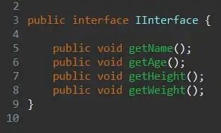
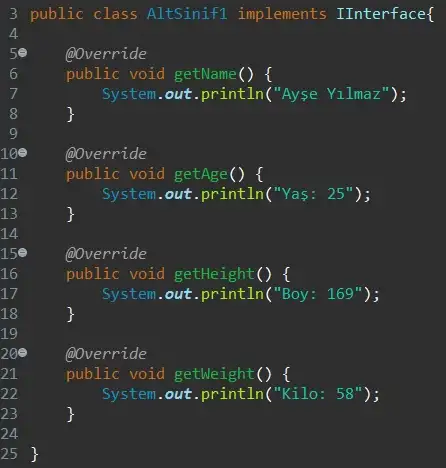
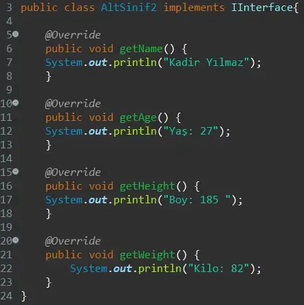
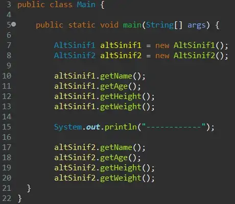
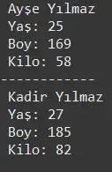

JAVA'DA INTERFACE
Interfaceler yapısal olarak classlara benzemektedir fakat javada tanımlanan her metot alt sınıflarında override edilmelidir. Interface’i alt sınıfların annesi olarak kabul edersek alt sınıfları da çocukları olarak kabul edebiliriz. İnterface’de içi boş metotlar tanımlanmaktadır ve alt sınıflarda bu metotlar tanımlanıp override edilmelidir.
Öncelikle kişi tanıtımı için bir interface oluşturduk ve kullanılacak metotları içi boş şekilde ekledik.
Daha sonra ilk alt sınıfımızı oluşturduk ve interface’de verilen metotların değerlerini burada tanımladık.
ikinci alt sınıfı da oluşturup değerlerini tanımladık.
Main’ e gelerek classsları çağırdık.
Çıktı şekilde gözüktüğü gibi.
Yukarıdaki örnekte de gördüğümüz üzere; implements , class interface’i çağırırken kullanılır.Ayrıca interface’de tanımlanan tüm metotları class’ta overrride ettik. Bi class’ta interface’ deki tüm metotlar olmalıdır ancak o classa ait ekstra metotlar eklenebilir.Örnekte 2 class da aynı interface’i kullandı. İnterface’ler bir veya daha fazla class tarafından implement edilebilir.
Ek olarak:
— Bir class birden fazla implement içerebilir.
— Tanımlamalarda sadece public ve default kullanılabilir.
— İnterface kullanılarak nesne üretilmez.
— Kodun okunurluğunu artırmak için interface isimlerinin başına I eklenmesi sıklıkla kullanılan bir yöntemdir.